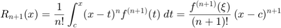
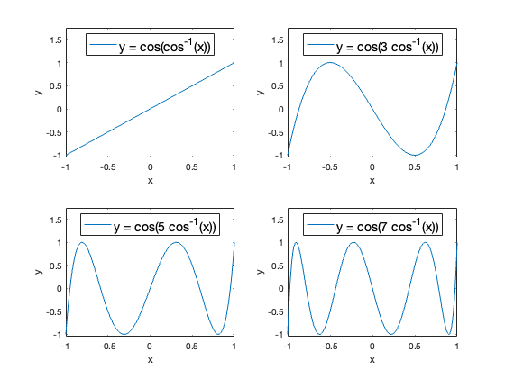
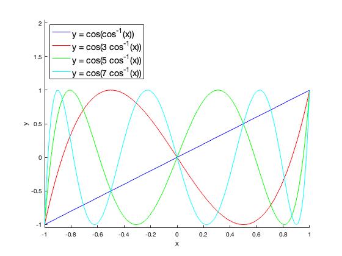

Plots of cos(nx) for n=1,3,5,7.
Michael Rogers, Math 315, 2019.01.16
Contents
Grid of plots
This shows a two-by-two grid of plots of Chebyshev polynomials. This is a silly sentence just to show a little more text. And some more. The point is to show that you can have paragraphs explaining the code and its output;
If you "Publish" to pdf, it will generate a PDF report for submission.
In the m-file, there is code for making this formula:

x = linspace(-1, 1, 201);
T1 = cos(acos(x));
T3 = cos(3*acos(x));
T5 = cos(5*acos(x));
T7 = cos(7*acos(x));
subplot(2,2,1)
plot(x, T1)
legend({'y = cos(cos^{-1}(x))'},...
'FontSize',14,...
'Location','north');
ax = gca; % Get Current Axes
ax.YLim = ax.YLim + [-0.05, 0.75];
xlabel('x');
ylabel('y');
subplot(2,2,2)
plot(x, T3)
legend({'y = cos(3 cos^{-1}(x))'},...
'FontSize',14,...
'Location','north');
ax = gca; % Get Current Axes
ax.YLim = ax.YLim + [-0.05, 0.75];
xlabel('x');
ylabel('y');
subplot(2,2,3)
plot(x, T5)
legend({'y = cos(5 cos^{-1}(x))'},...
'FontSize',14,...
'Location','north');
ax = gca; % Get Current Axes
ax.YLim = ax.YLim + [-0.05, 0.75];
xlabel('x');
ylabel('y');
subplot(2,2,4)
plot(x, T7)
legend({'y = cos(7 cos^{-1}(x))'},...
'FontSize',14,...
'Location','north');
ax = gca; % Get Current Axes
ax.YLim = ax.YLim + [-0.05, 0.75];
xlabel('x');
ylabel('y');
 Combined plots
subplot(1,1,1) % resets the plot figure hold on plot(x, T1, 'b') plot(x, T3, 'r') plot(x, T5, 'g') plot(x, T7, 'c') legend({'y = cos(cos^{-1}(x))', 'y = cos(3 cos^{-1}(x))',... 'y = cos(5 cos^{-1}(x))', 'y = cos(7 cos^{-1}(x))'},... 'FontSize',14,... 'Location','northwest'); ax = gca; % Get Current Axes ax.YLim = ax.YLim + [-0.05, 1.05]; xlabel('x'); ylabel('y'); hold off